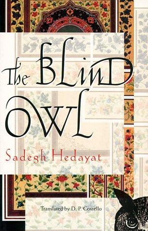
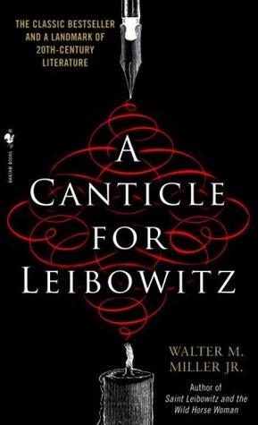
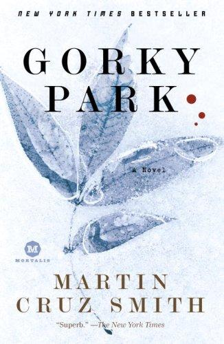
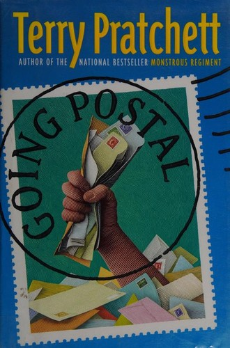

Recommendations for the week of 13 July 2026.
The highbrow picks rotate onto three distinct growth edges this week. Translated non-Western literary fiction reaches a wholly new region — Iran/Persia — with the founding text of Persian modernism. Rigorous true crime returns, but pointed at the criminology-and-inference edge rather than the political register of Say Nothing. And poetry gets a physics-adjacent entry, an ideas-first collection that keeps the invariants intact on a near-empty shelf. The comfort picks stay in the most well-loved veins — classic SF, crime, and Discworld — but each earns its place on a clean idea or a cold moral atmosphere rather than sentiment: a millennial cycle of knowledge lost and rebuilt, a Moscow murder in le Carré's weather, and a con man rebuilding a public institution as an honest racket.



